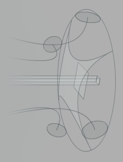

|
romdur était avant tout une interface destinée à diffuser mes projets multimédia. Mais au delà du fond, que l'on peut assimiler à la première dimension, je voulais une forme résolument intéractive. C'est pourquoi j'ai opté pour un espace à trois dimensions, où évoluent des objets relativement simple. Je peux ainsi les animer indépendamment dans le temps (c'est la 5ième dimension), selon des parametres qui dépendent de l'utilisateur. Pour renforcer cette intéractivité, il était indispensable d'ajouter un environement sonore, évoluant aussi selon cerains parametres (les mouvements et positions des objets dans l'espace). Voici donc une interface à six dimensions, toutes liées entre elles, et toutes liées à l'utilisateur.
romdur est désormais vide de par son fond, mais il subsiste par sa forme.
2004
|

|